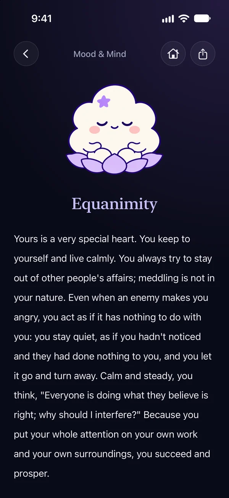
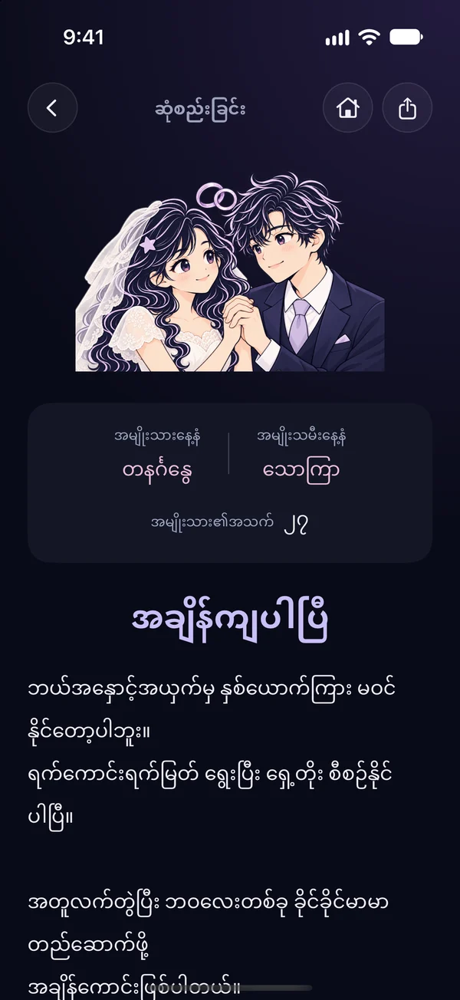
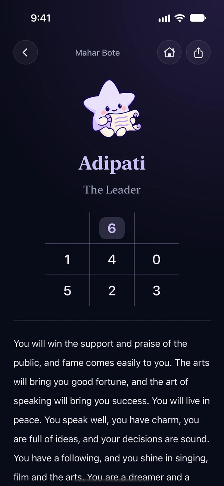
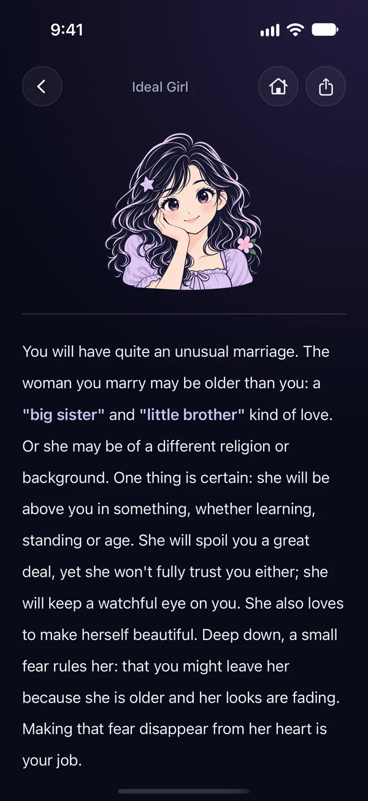
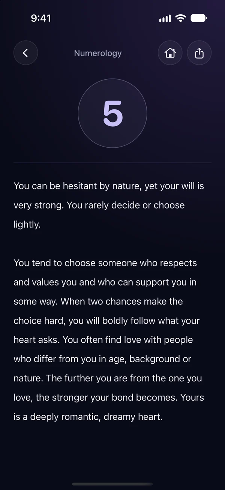
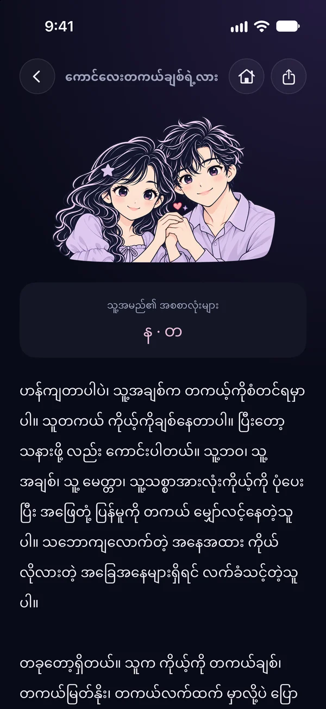
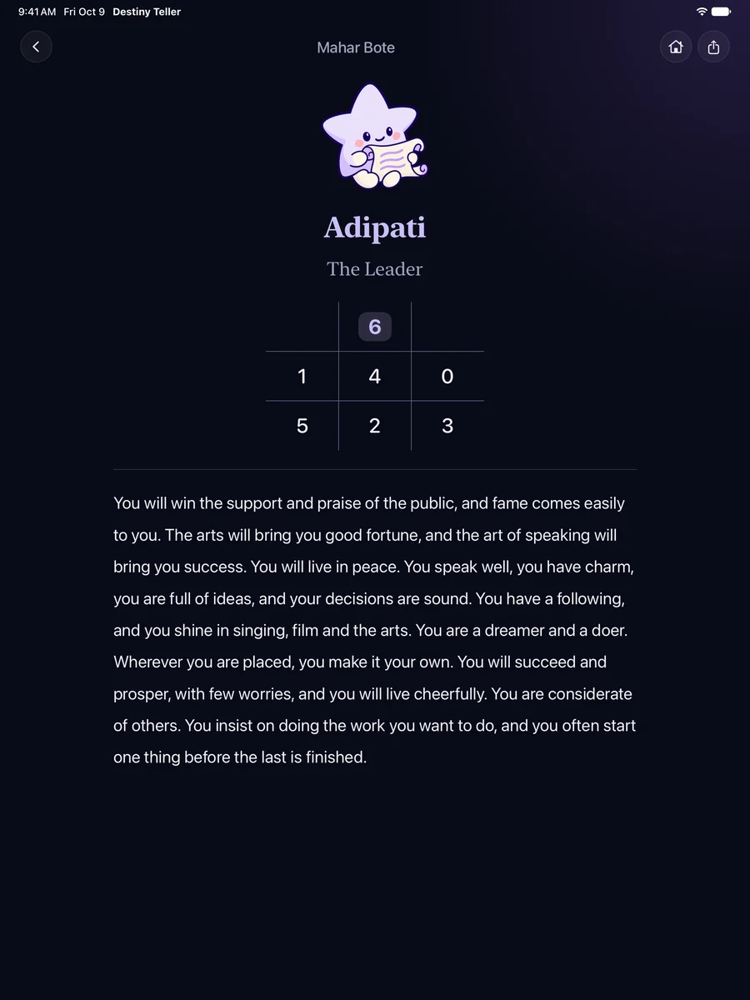
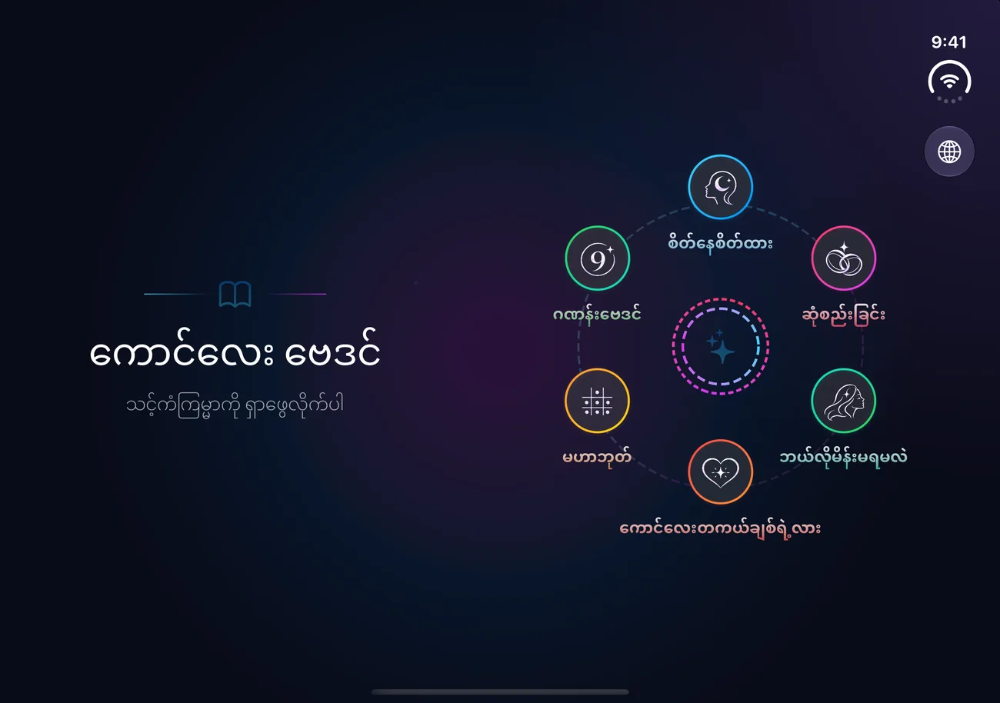

Your destiny,
written in the stars
Six traditional Myanmar readings from your birth date and weekday, in the warm, personal voice of a Burmese astrologer.
The fortune-telling of Myanmar,
in your pocket
Readings from your birth date, your weekday and the Myanmar calendar, written for the original Kglay Baydin and kept exactly as they were.






Your fortune,
in your language
Every reading was translated from the original Myanmar, in each language's own fortune-telling style. The app opens in your phone's language, and Thai readers see dates in the Buddhist era.


Open it like
a book
On the open iPhone Duo every screen becomes two pages that meet at the fold: the picture on the left, your reading on the right. Folded, it's the familiar iPhone layout, and the buttons sit under the side status bar, the way iPhone Duo intends.
A 2014 app, rebuilt faithfully
Kglay Baydin was written in Objective-C with Zawgyi text. Destiny Teller is a native SwiftUI rewrite that keeps every reading and formula the same.
Tested against the original
The Objective-C formulas are transliterated into the test suite, and Swift Testing checks every calculator against them over all inputs.
The real Myanmar calendar
The Myanmar year turns at the actual Thingyan New Year, not a fixed date. Dates display in the reader's calendar while every formula reads the Gregorian date, checked for each day from 1925 to 2030.
From Zawgyi to Unicode
The legacy readings were converted from the Zawgyi encoding and proofread side by side with the originals, with line breaks kept inside Myanmar syllables.
One app, three shapes
A compact iPhone layout, a larger iPad layout, and a two-page spread for the open iPhone Duo, each checked so the others don't change.
Questions
Is Destiny Teller free?
Yes. It's free, with no ads and no in-app purchases.
Is this the old Kglay Baydin?
Yes. Destiny Teller is the new version of Kglay Baydin (ကောင်လေး ဗေဒင်), rebuilt from scratch with the same readings and formulas. If you have Kglay Baydin, it updates to Destiny Teller.
Do I need an account or an internet connection?
No. There's nothing to sign up for, and every reading is worked out on your phone, offline.
What data does it collect?
None. The only thing the app stores is the language you chose. See the privacy policy.
Why is "Is He The One?" only in Myanmar?
Its formula and the astrologer's text work from Burmese names, so it appears when the app is in Myanmar.
Is it on Android?
Destiny Teller is available for iPhone and iPad. An Android version is planned.